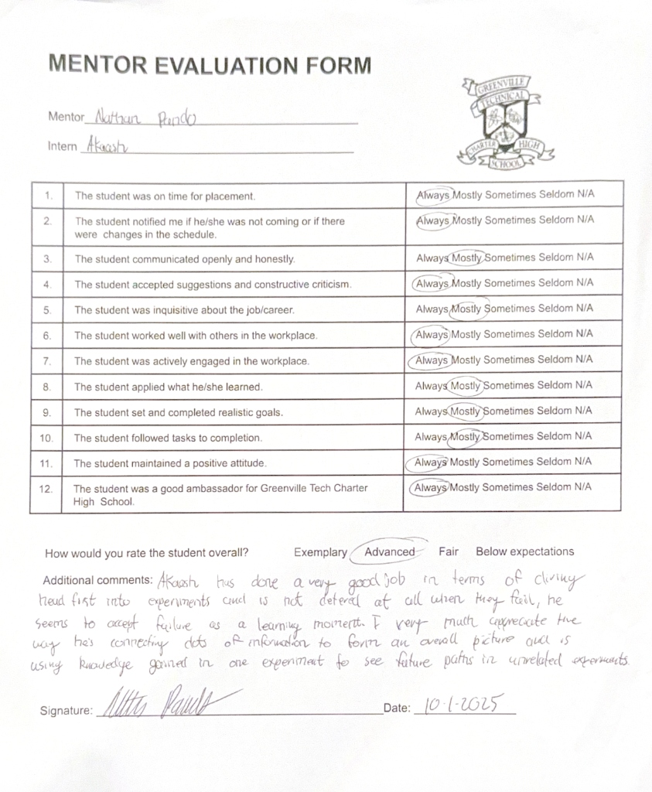
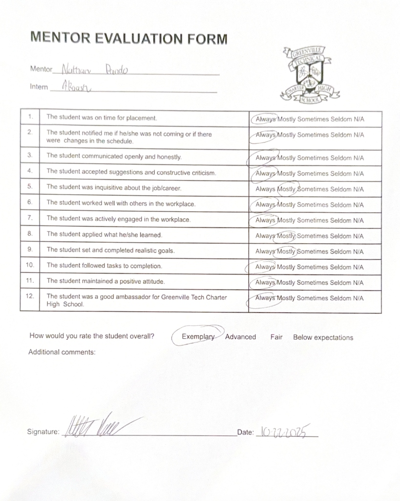
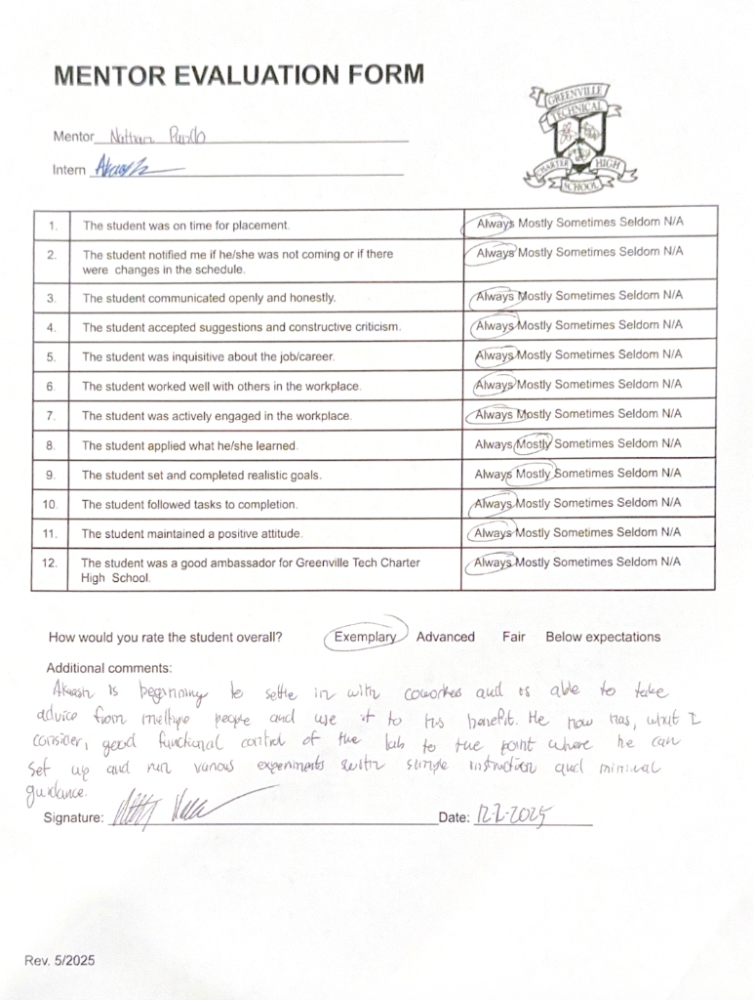
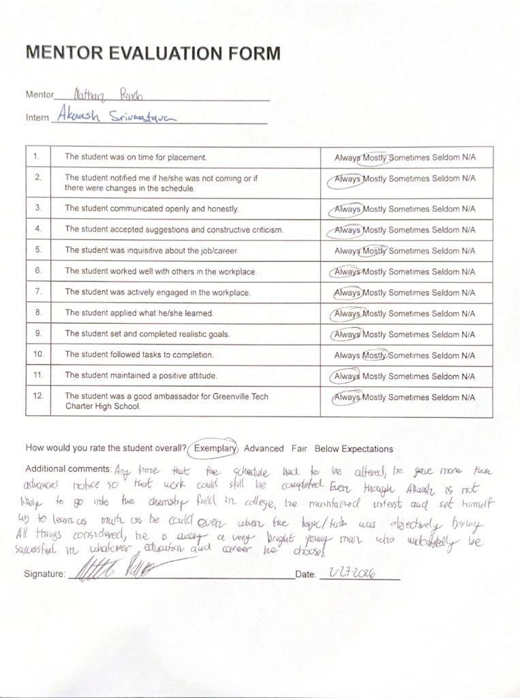
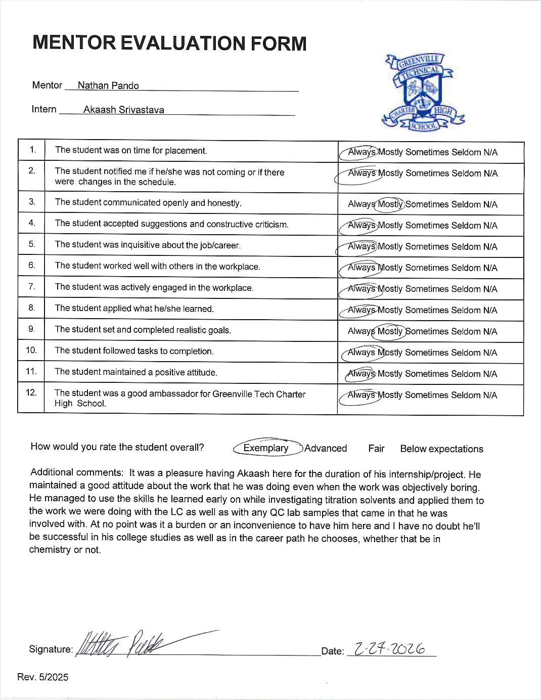

Contribution
And
Impact
ADDING VALUE & MAKING IMPACT
This section documents the actual work I did at Jain Chem Ltd. I worked across multiple areas of the lab, operating advanced analytical instruments, contributing to ongoing projects, and solving real problems with real consequences. It also includes my mentor evaluations, which reflect my growth and performance as observed by an experienced chemist throughout the course of my internship.
04.1
High Pressure Liquid Chromatography
Click the box to explore
HPLC Analysis
Independent method development and sample analysis using high pressure liquid separation.
04.2
Additional Methodologies
Click each box to explore
Quality Control
Routine lab testing, data validation, and procedure development across multiple products.
Gas Chromatography
Hands-on separation and analysis of volatile compounds using heat-based methods.
Refractive Index
Tracking sample components through light refraction measurement.
Titrations
Quantitative chemical analysis including hydroxyl value testing, acid value determination, and Karl Fischer moisture analysis.
04.3
Mentor Evaluations
Click on each evaluation to expand





"It was a pleasure having Akaash here for the duration of his internship/project. He maintained a good attitude about the work that he was doing even when the work was objectively boring. He managed to use the skills he learned early on while investigating titration solvents and applied them to the work we were doing with the LC as well as with any QC lab samples that came in that he was involved with. At no point was it a burden or an inconvenience to have him here and I have no doubt he'll be successful in his college studies as well as in the career path he chooses, whether that be in chemistry or not." - Nathan Pando, Mentor